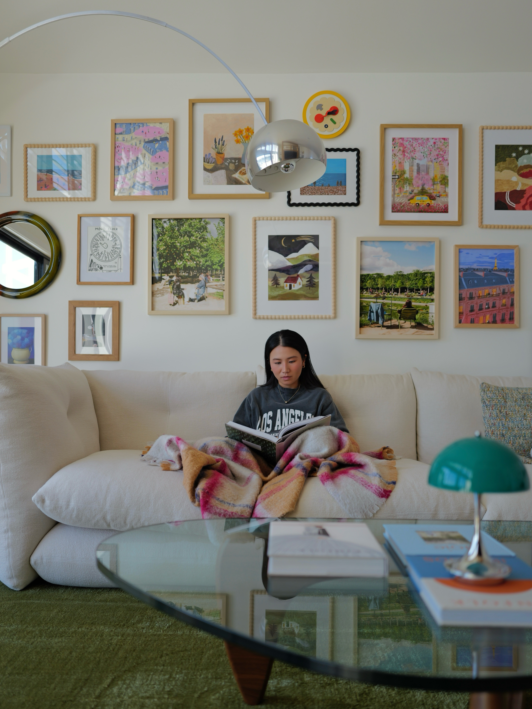
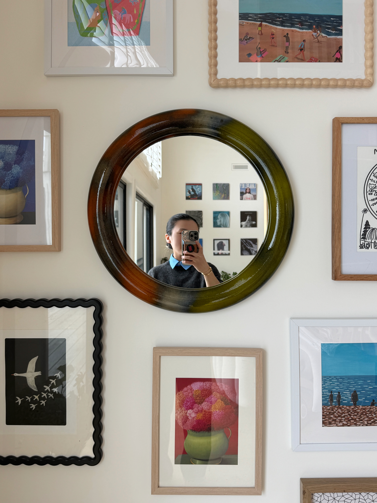
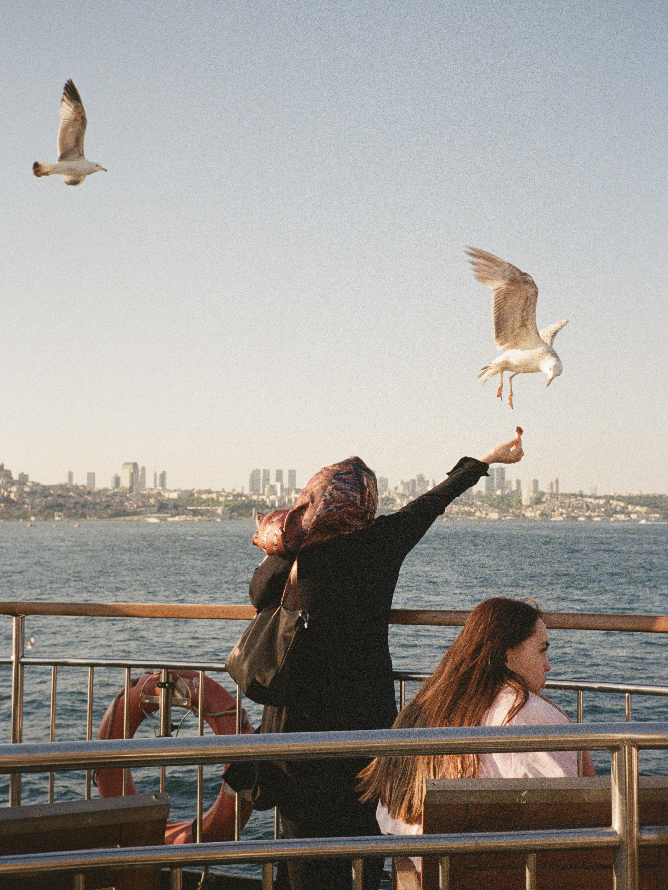
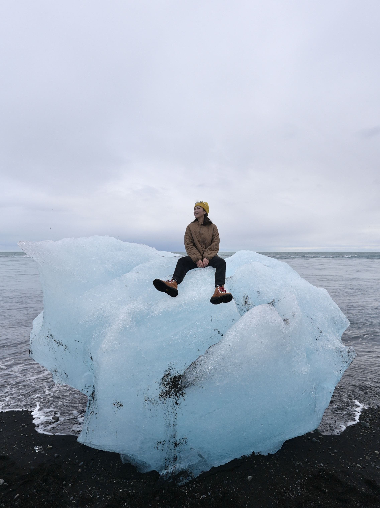
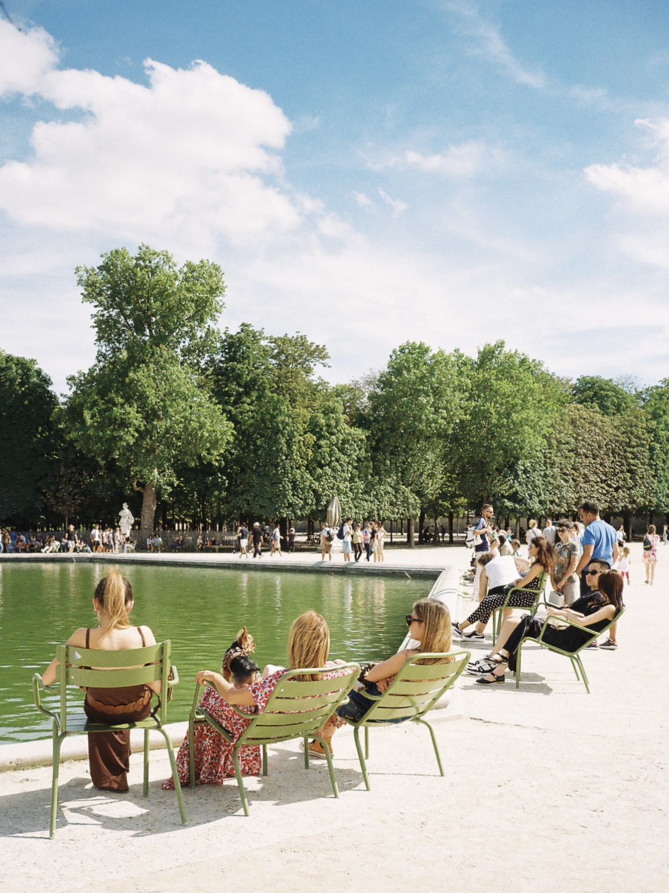

I love real people problems, delightful little details ✿, and playful UI that makes you go ( ,,◕ ̲ ◕,, ). I believe everything can be made better with good design and a dash of humor.
Outside of work, you can usually find me taking photos with my film camera, planning my next trip, organizing tiny corners of my home, or falling into a social media rabbit hole for a little too long.

my little living room

mirror selfie ofc

Istanbul, 2025
Jaipur, India, 2019

Iceland, 2023

Paris, 2024